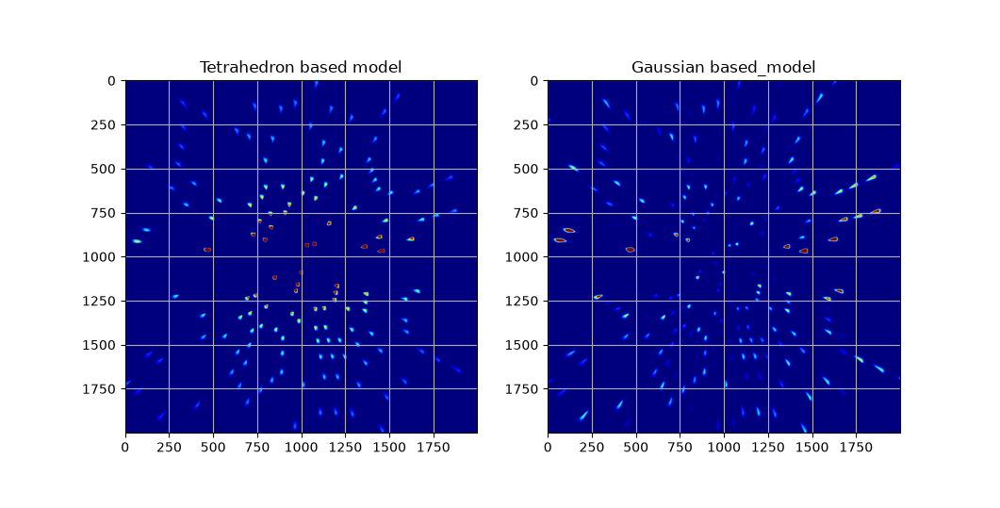
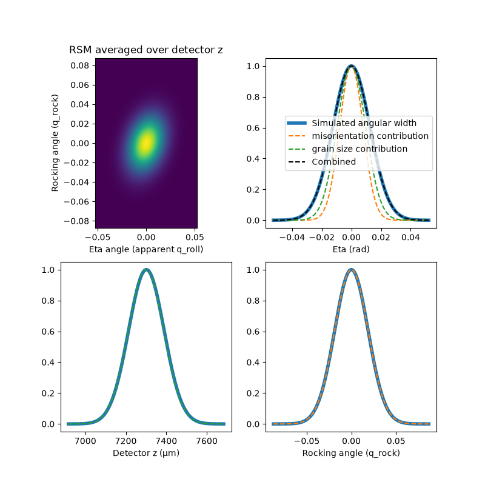

Gaussian model: theory and references
This page describes the scattering model and approximations underlying
xrd_simulator.gaussian_crystal_model. A worked example is provided in
the module documentation.
Gaussian subgrain representation
Gaussian splatting represents a three-dimensional scene using Gaussian primitives whose projected contributions can be rendered efficiently by rasterization [Kerbl2023]. Here, a polycrystal is represented by Gaussian grains or subgrains, each with a Gaussian real-space density profile and a narrow Gaussian distribution of lattice orientations. Under the approximations below, each subgrain produces Gaussian-shaped diffraction spots on the detector. Related Gaussian-basis methods for diffraction prediction and partiality estimation have been demonstrated in serial crystallography [Brehm2023].
Several effects can contribute to diffraction-spot broadening: grain size, detector point-spread, incident-beam bandwidth, incident-beam angular divergence, lattice misorientation (mosaicity), and distributions of strain. When these effects have Gaussian profiles and their deviations are small enough to neglect nonlinear terms, they can be combined within a Gaussian model.
The model described here includes the real-space extent of the illuminated subgrains and their mosaicity. The incident beam is monochromatic and collimated, and each subgrain has a uniform strain tensor. A uniform strain can shift a reflection but does not describe a distribution of lattice spacings within that subgrain. Small sample rotations during an exposure are approximated by additional Gaussian orientation broadening.
Note
The Gaussian-splat rendering path does not apply a separate detector
point-spread convolution. The gaussian_sigma and
max_gaussian_kernel_radius detector settings retained in the worked
example therefore do not add this broadening to its Gaussian spots.
Scattering theory
Scattered-beam distribution
Let the incident beam have a phase-space density \(p(\mathbf{k})\) centred on \(\mathbf{k}_0\), with nominal wavenumber
For a particular reflection, let \(f(\mathbf{q})\) describe the subgrain’s reciprocal-space map (RSM) around a reciprocal-lattice vector \(\mathbf{G}_0\). The scattered-beam distribution is written as
The scalar Dirac delta enforces elastic scattering, while the three-dimensional Dirac delta enforces momentum conservation.
Incident-beam coordinates
Following the coordinate construction used by Poulsen et al. [Poulsen2017], write the incident wavevector as
A hat denotes a unit vector. The vector \(\hat{\mathbf{k}}_{\parallel}\) is perpendicular to \(\mathbf{k}_0\) and lies in the plane spanned by \(\mathbf{k}_0\) and \(\mathbf{G}_0\). Its sign is chosen so that \(\mathbf{G}_0\cdot\hat{\mathbf{k}}_{\parallel}>0\). Complete the right-handed basis with
The coordinate \(\varepsilon\) describes the relative wavenumber deviation, and \(\zeta_{\parallel}\) and \(\zeta_{\perp}\) describe small angular deviations of the incident beam.
Reciprocal-space coordinates
Define the nominal Bragg angle and the exactly aligned scattering vector by
The vectors \(\mathbf{G}_0\) and \(\mathbf{Q}\) coincide when the reflection is exactly aligned. For a small misalignment, their difference is parallel, to first order, to the rocking direction
Use dimensionless rocking, strain, and rolling coordinates to write
where
This offset measures the reflection’s misalignment and is equal to the rocking angle to first order, with the sign convention above. The incident coordinates \((\varepsilon,\zeta_{\parallel},\zeta_{\perp})\) and the reciprocal-space coordinates \((q_{\mathrm{rock}},q_{\mathrm{strain}},q_{\mathrm{roll}})\) separate bandwidth, collimation, misorientation, and strain effects.
Outgoing-beam coordinates
The nominal scattered wavevector is
Define the radial direction perpendicular to \(\mathbf{k}_h\) by
The outgoing wavevector can then be written as
Here \(\psi_{\mathrm{rad}}\) and \(\psi_{\mathrm{azim}}\) are small transverse angular deviations from the nominal outgoing direction.
Linearized conservation equations
To first order,
Energy conservation therefore sets \(\varepsilon'=\varepsilon\). Momentum conservation gives \(\mathbf{q}=\mathbf{p}-\mathbf{k}\) and, after substitution,
Note
The incident-divergence terms have minus signs because the incident wavevector is subtracted in \(\mathbf{q}=\mathbf{p}-\mathbf{k}\). This corrects the corresponding signs in the original workflow. It does not affect the monochromatic, collimated specialization below, where both terms vanish.
Monochromatic, collimated specialization
The current model assumes
The last condition excludes strain-distribution broadening; it does not require the uniform subgrain strain to vanish. The conservation equation reduces to
For a nondegenerate Bragg geometry, the three coordinate equations are
Thus, the scattered angular distribution samples the RSM along a line parallel to \(\hat{\mathbf{k}}_{\perp}\), offset by \(\delta q\) from its centre. For a Gaussian RSM, this gives a one-dimensional Gaussian angular distribution. The finite real-space extent of the illuminated subgrain is subsequently projected onto the detector to produce a two-dimensional spot.
Anisotropic Gaussian orientation distributions
Tangent-space approximation
Consider a narrow orientation distribution centred on an orientation \(g_0\). Approximate orientation space by its left tangent space at \(g_0\), so that a small rotation vector \(\mathbf{r}\) acts in laboratory coordinates:
The Gaussian orientation density used in the workflow is
where \(\mathbf{T}\) is a symmetric positive-definite concentration tensor.
Note
The prefactor above retains the workflow’s normalization convention. With ordinary Euclidean tangent-space measure, \(\int f(\mathbf{r})\,\mathrm{d}^{3}\mathbf{r}=2\pi\), not one. It should therefore not be interpreted as a unit-normalized Euclidean probability density without rescaling.
For an exponential of the form
\(\exp(-\mathbf{r}^{\mathsf{T}}\mathbf{T}\mathbf{r})\), the
corresponding normalized Gaussian has covariance
\(\tfrac{1}{2}\mathbf{T}^{-1}\). The implementation directly inverts
misorientation_tensor to obtain \(\mathbf{T}\). Consequently,
the square roots of the input tensor’s eigenvalues are Gaussian width
parameters, not standard deviations. For an input eigenvalue
\(a^2\), the standard deviation is \(a/\sqrt{2}\).
The real-space Gaussian uses the same exponential convention for
shape_tensor. This distinction matters because the class attribute
descriptions currently use the word “covariance” for these inputs.
Pole density as a line integral
For Miller indices \((h,k,\ell)\), define the unit lattice direction in crystal coordinates by
Here \(\mathbf{B}_0\) is the reciprocal-lattice basis matrix. In this section, \(\mathbf{p}\) denotes the mean lattice direction, rather than the outgoing wavevector used in the scattering section. It is parallel to \(\mathbf{G}_0\). Let \(\mathbf{y}\) be a unit direction in laboratory coordinates, parallel to a sampled reciprocal-space vector \(\mathbf{q}\); it is not a Cartesian coordinate-axis label.
The pole density, also called the pair-correlation function in texture analysis, describes the density of lattice directions along \(\mathbf{y}\). Its calculation normally involves an integral over a circle in \(\mathrm{SO}(3)\). Within the tangent-space approximation, replace this by an infinite line integral, parameterized as
The parameter \(\lambda\) here is a line-integration parameter, not the X-ray wavelength. Substitution into the Gaussian density and completion of the square give, with \(d=\mathbf{p}^{\mathsf{T}}\mathbf{T}\mathbf{p}\),
Projected concentration tensor
For directions close to the pole, make the further approximation \(\mathbf{p}\cdot\mathbf{y}\approx1\). Define
Let \([\mathbf{p}]_{\times}\) denote the cross-product matrix, \([\mathbf{p}]_{\times}\mathbf{y}=\mathbf{p}\times\mathbf{y}\). Then
and the pole density becomes
Equivalently, using the Levi-Civita symbol \(\epsilon_{ijk}\) and summation over repeated indices,
This absorbs the cross products into the projected tensor and makes the subsequent Gaussian expressions more compact.
Reciprocal-space map
The pole density is defined for unit-vector arguments. With no strain-distribution broadening, extend it to a reciprocal-space map supported on the local plane \(q_{\mathrm{strain}}=0\).
Introduce the two-column basis matrix and coordinate vector
In the dimensionless reciprocal-space coordinates defined above, the workflow’s local RSM is
The Dirac delta expresses the absence of a distribution of lattice spacings within the subgrain. Sampling this Gaussian at \(q_{\mathrm{rock}}=\delta q\), as required by (10), gives the scattered angular distribution for the reflection.
Illustrative tests
Comparison with a tetrahedral crystal
The workflow compares a one-degree rotation of a single quartz crystal shaped as a symmetric tetrahedron with a Gaussian approximation of the same crystal. The crystal is much larger than the detector pixels, and the largest scattering angles exceed 60 degrees, making radial spot elongation from the projection geometry visible.
Seven Gaussians approximate the tetrahedron: one isotropic Gaussian at its centre and six prolate Gaussians along its edges. The Gaussian model uses a small orientation spread.
The comparison shows similar peak positions and shapes. The Gaussian model also produces additional weak peaks because its rotational integration uses a Gaussian time window, whereas the tetrahedral model uses a top-hat time window.
{kind=link}

Comparison of the tetrahedral crystal model with a seven-Gaussian approximation during a one-degree sample rotation.
High-resolution rocking curve
A second test resolves a rocking curve and checks the shape of the resulting three-dimensional reciprocal-space map. The workflow figure compares the simulated profiles with the expected contributions from grain size and misorientation.
{kind=link}

High-resolution rocking-curve test showing the reciprocal-space map and the contributions of grain size and misorientation to the simulated profiles.
References
Kerbl, B., Kopanas, G., Leimkühler, T. and Drettakis, G. (2023). 3D Gaussian Splatting for Real-Time Radiance Field Rendering. ACM Transactions on Graphics, 42(4). doi:10.1145/3592433.
Brehm, W., White, T. and Chapman, H. N. (2023). Crystal diffraction prediction and partiality estimation using Gaussian basis functions. Acta Crystallographica Section A: Foundations and Advances, 79, 145–162. doi:10.1107/S2053273323000682.
Poulsen, H. F., Jakobsen, A. C., Simons, H., Ahl, S. R., Cook, P. K. and Detlefs, C. (2017). X-ray diffraction microscopy based on refractive optics. Journal of Applied Crystallography, 50, 1441–1456. doi:10.1107/S1600576717011037.